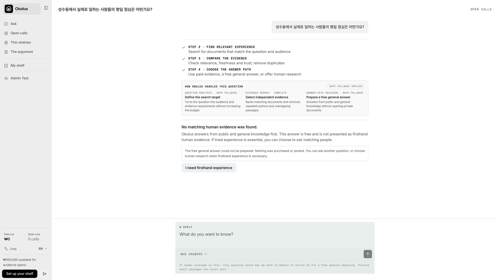
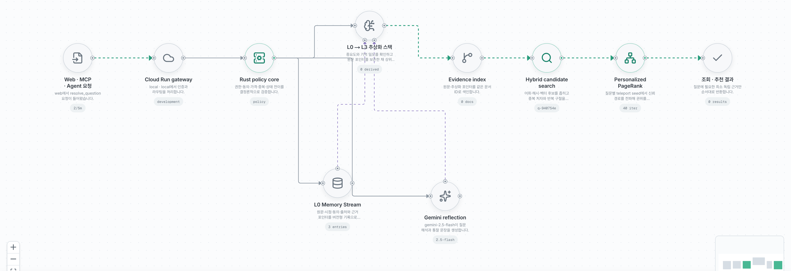
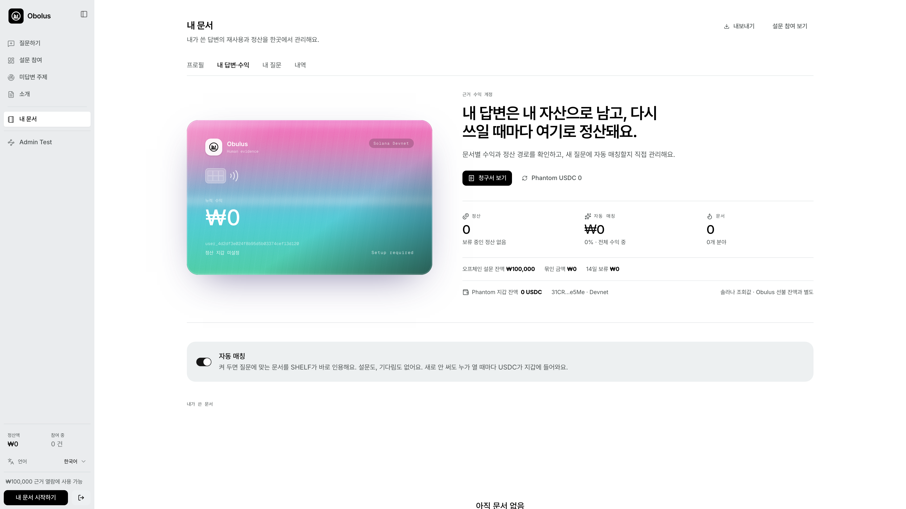
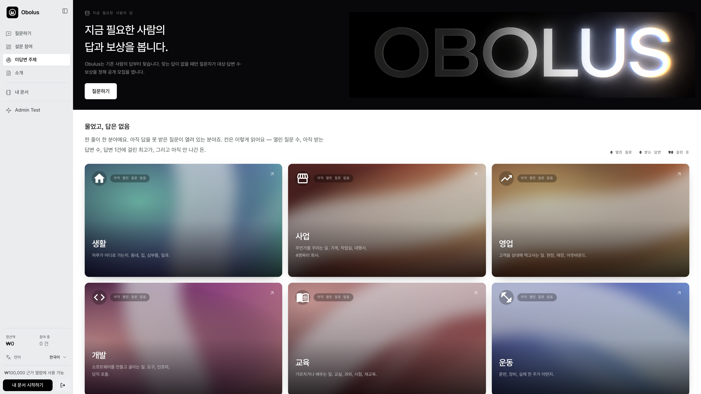
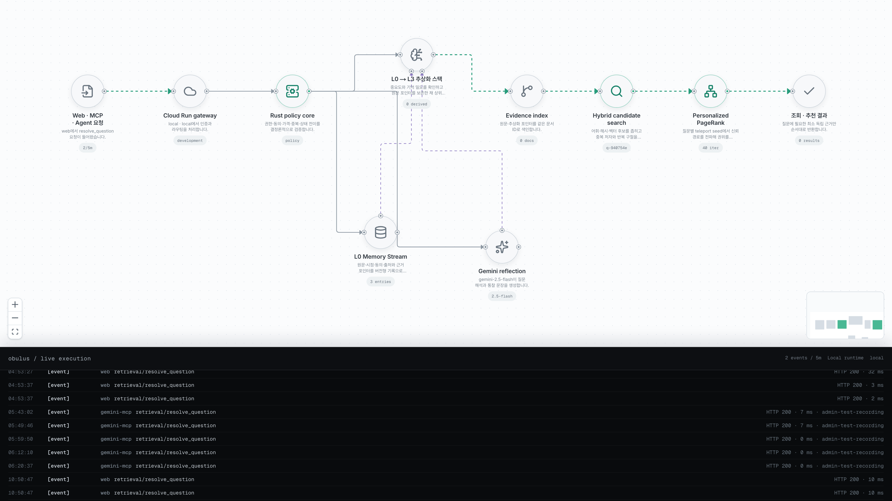
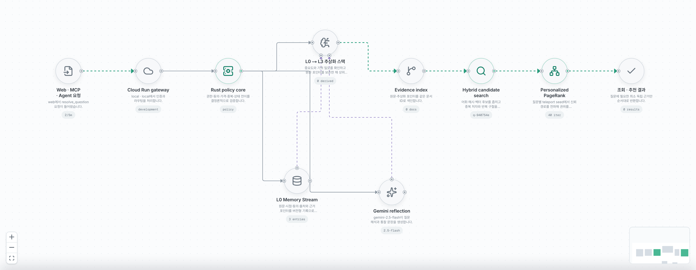

Obolus · Google Cloud × Solana
AI는 웹을 검색합니다.
Obolus는 사람의
실제 경험을 검색합니다.
공개 웹에 없는 인간 근거를 찾고, 필요한 원문만 열어 본 뒤, 사용한 사람에게 자동 정산하는 검색·결제 인프라입니다.
공개 웹에 없는 인간 근거를 찾고, 필요한 원문만 열어 본 뒤, 사용한 사람에게 자동 정산하는 검색·결제 인프라입니다.
가입 포기·신뢰·이탈 이유
출시·메뉴·사용 맥락
반복 A/B·정성 검증
설문·인터뷰·패널 비용이 질문마다 처음부터 발생합니다.
원문·저자·시점·동의 범위가 다음 질문의 검색 자산이 되지 못합니다.
구매자는 반복 비용을 줄이고, 기여자는 채택·재사용 때마다 정산받습니다.
가격·버전·독립 저자 수·근거 범위만 공개합니다.
Rust가 관련성·동의·가격·저자 중복을 검증합니다.
HIT이면 검색으로 끝내고 PARTIAL일 때만 부족한 사람을 모집합니다.


질문 해석 · 검색 필터 · 문서 수 · 도구 선택
동의 · 가격 · 예산 · 중복 · PageRank · 상태 전이
HIT/PARTIAL/MISS 뒤 purchase · hybrid · baseline · stop
지갑 · 수취인 · 가격 · 예산 상향 · transaction bytes는 모델 밖
첫 로그인과 새 자금·권한이 필요할 때만 확인합니다.
기간·scope·budget·expiry 밖 요청은 Rust가 거부합니다.
facilitator가 network fee payer가 되어 구매자는 SOL이 필요 없습니다.
문서 ID·version·hash·수취인·atomic amount·signature를 청구서에 남깁니다.
현재: Solana Devnet hosted service wallet. 청구서는 승인·접근·정산을 증명하며, 답변의 진실성은 신뢰 그래프가 별도로 평가합니다.

firsthand · 거주 6년 · consent v3
independent corroboration · 거주 3년
sponsored · authority 0
2 independent authors · outcome verified
contextualizes · positive weight .35
score = relevance .60 + coverage .12 + authority .13 + trust .10 + freshness .05
국내 프로덕트·인사이트 팀의 좁은 cohort부터 시작해, 재사용 가능한 인간 근거의 시간·비용·정산률을 검증합니다.

예: 첫 월급을 받은 20대가 적금을 포기한 실제 이유
가격·버전·독립 저자 수만 공개
eligibility gate
실제 coverage 상태
x402 · Pay.sh
citation + owner payout
기존 근거만으로 충분합니다.
있는 답은 재사용하고 빈칸만 묻습니다.
무조건 유료 모집으로 가지 않습니다.
query 해석
category·filter enum
requested documents ≤ ceiling
purchase·hybrid·open call·baseline·stop
wallet·private key
recipient·price·quote
budget 상향
transaction bytes·state transition

관련성·독립 저자·예산 조건을 만족하는 근거가 충분합니다.
일부 근거가 있으나 cohort 또는 사례 수가 부족합니다.
질문에 맞는 유료 근거를 아직 찾지 못했습니다.
| State | Allowed default | Always revalidated | Forbidden |
|---|---|---|---|
| HIT | propose selected bundle | document version · author diversity · total | 새 가격·수취인 생성 |
| PARTIAL | existing evidence + missing cohort | coverage gap · budget · target | 전체 설문 재모집 |
| MISS | free baseline / stop | 실제 candidate count = 0 | 자동 funded call |
현재 relevance는 768차원 word + 2~3자 character n-gram FNV-1a feature hashing과 cosine similarity입니다. 결정적·저비용·감사 가능하지만 semantic embedding은 아닙니다.
“Google 검색 알고리즘 복제”가 아니라 PageRank의 query-personalized graph authority 원리를 인간 근거 그래프에 재설계했습니다.
원문·동의·시점·exact child IDs
deterministic keyword/template reflection
L2→L3→L4→L5 재귀
L5에서 L0까지 역추적
source 부족 시 invalid/hidden
고밀도에서 Gemini 질문 3개·expert lens
importance 0–1 deterministic heuristic · 답변 길이·숫자 specificity·interview depth·question depth · paid reuse는 새 관측으로 세지 않음 · L1 .8, 상위 최대 .98.
recent window 100 · importance sum 150 · high-level question 3개 · expert lens + recursive reflection · threshold·prompt·model version artifact 기록.
같은 소유자의 반복 문서를 한 bundle에서 제거하고, verified outcome과 독립 corroboration만 권위를 올립니다.
서로 주고받은 organic edge는 정상 weight의 20%만 인정하고, source lineage·contradiction·dispute는 감사 신호로 보존합니다.
지갑·기기·문체·시간 sybil cluster, reciprocal community 이상치, rank snapshot, 철회 시 descendant invalidation을 검증합니다.
소유권 증명. private key는 서버에 주지 않음.
30일 범위와 승인 한도를 고정.
잔액 부족할 때만 사용자 서명.
문서·owner·hash·mint·amount.
고정 service wallet · 요청마다 새 지갑 아님.
network fee 후원. evidence 가격은 구매자 부담.
recipient ATA·mint·atomic amount 검증.
Devnet USDC transfer.
불일치 시 문서 미개방.
idempotency fence와 audit record.
| Attack | Receipt / policy control | Still requires |
|---|---|---|
| 없던 거래·가격·수취인 조작 | approval fingerprint · quote nonce · exact ATA/mint/amount | 악성 UI 방지·KMS 최소 권한 |
| 중복 청구·재시도 | idempotency key · attempt fence · chain reconciliation | 운영 SLO·restore drill |
| 문서 바꿔치기·미확정 개방 | version/content hash · 2-RPC finalized | 철회·정정·descendant recompute |

API · x402 gateway · Agent orchestrator · Pay service. 독립 revision/service account/repository.
quote·capability·consent·memory·agent run·idempotency. backup/PITR/ENCRYPTED_ONLY.
settlement queue · max 20/s · concurrency 20 · bounded retry 7 days.
non-exportable Ed25519 signer · Gemini 2.5 Flash planner/decider.
동의 version·purpose·TTL·민감도·철회 상태. public chain에는 개인 원문을 쓰지 않습니다.
pseudonymous handle·document version/hash·abstraction pointers·authority. 검색 전에 consent filter를 적용합니다.
USDC transaction·finality·canonical message hash. 회계 감사에 필요 없는 개인정보는 배제합니다.
Phantom seed/private key · 평문 장기 signing key · 불필요한 SNS archive · 결제와 무관한 wallet tracking metadata.
L0 locked/void → descendant reflection 탐색 → 남은 source로 재계산 → 부족하면 상위 통찰 hidden → index/PageRank 갱신 → 영수증은 hash 중심 최소 보존.
공개 benchmark로 schema와 metadata를 먼저 구성
1–2 cohort · firsthand context 필수
기존 근거를 살리고 빈칸만 모집
preview·redaction·source pointer gate
API 비용·권리·token 보안 gate 통과 시에만
채택·재사용·검증된 결과가 authority를 두껍게
언제·어디서·어떤 상황·어떤 결과였는지 firsthand context를 요구합니다. 같은 소유자의 반복 문서는 독립 근거로 세지 않습니다.
API 비용이 마이크로페이보다 커질 수 있고, 장기 OAuth token·scope·revoke·삭제·재배포 권리가 핵심 검증보다 큰 책임을 만듭니다.
질문당 독립 저자 수 · HIT/PARTIAL/MISS · Open Call 채택률 · usable evidence 비용 · 재사용 정산 · 분쟁/철회율.
| 데모 예시 | 8 docs × ₩15 = ₩120 |
|---|---|
| 목표 분배 | owner ₩108 · protocol ₩12 |
| 비용 | Cloud Run/SQL · Vertex · KMS/RPC · Tasks · dispute · contributor acquisition |
| 핵심 지표 | time-to-evidence · cost/evidence · reuse · citation · repeat purchase · dispute |
Cloud Run 4 services
Cloud SQL 16 / Tasks / KMS
Vertex Gemini 2.5 Flash
Solana Devnet USDC
hosted KMS service wallet
deterministic feature hashing
L0→L5 pointer graph
MCP search·quote·open tools
audited mainnet PDA escrow
upgrade authority policy
Cloud SQL HA/private IP/pool
SLO·incident·restore drill
sybil/collusion benchmark
learned embedding recall test
retention/TTL/reidentification
실제 willingness-to-pay